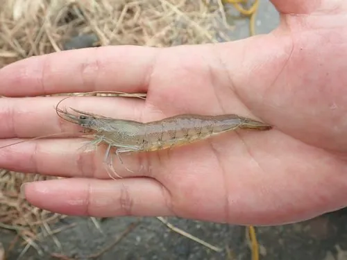

甲壳动物 · 动物界
长毛对虾 Penaeus penicillatus

体色淡褐微红、额角细长的对虾，中国东南沿海的重要养殖与捕捞对象，栖息泥沙底质浅海。
- 分类
- 门节肢动物门纲软甲纲目十足目科对虾科属对虾属
- 栖息环境
- 泥沙底质浅海、河口与沿岸浅水区
- 地理分布
- 印度洋北部至西太平洋，中国浙江以南至南海沿岸
- 保护级别
- 重要经济虾类，养殖规模大，野生资源受捕捞影响
物种志
长毛对虾的雌虾体长约十八至二十厘米，体色淡褐而带微红，甲壳薄，额角细长略向上弯，上缘有齿。第一触角鞭很长，雄虾的交接器细长，这是它区别于其他对虾的重要特征。腹部各节有淡色横带，尾扇边缘呈淡红色，活体半透明，煮熟后通体橙红。
它分布于印度洋北部至西太平洋，中国浙江以南至南海沿岸较常见，栖息在泥沙底质的浅海和河口附近。幼虾在沿岸浅水区成长，成虾向外海移动产卵，以底栖小动物和有机碎屑为食，夜间活动，一年可繁殖多代。它是中国南方对虾养殖的主要种类之一，也是近海捕捞对象，养殖过程中的水质管理和病害防控是关键问题。
形态与习性
- 体长雌虾约十八至二十厘米
- 体色淡褐微红，尾扇边缘淡红
- 额角细长略上弯，上缘具齿
- 触角第一触角鞭很长
- 食性底栖小动物与有机碎屑
- 经济中国南方主要养殖虾种之一
趣味知识
- 它的触角鞭特别长，几乎和身体一样长，在水里像两根飘带。
- 活虾是半透明的淡褐色，只有下锅后才显出那身橘红。
- 它是南方虾塘里的主力品种，一年能繁殖好几代。